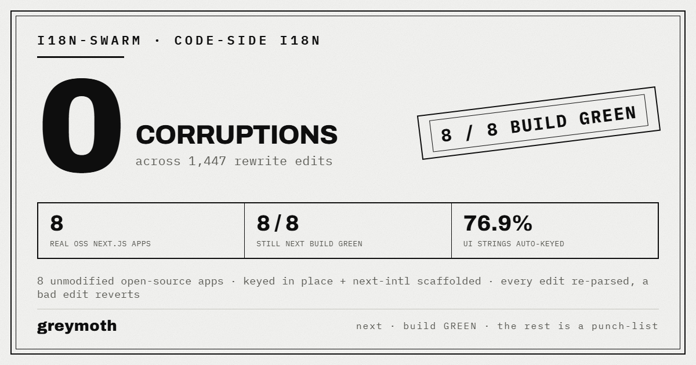

Point it at a repo. It keys the hardcoded strings, writes the locale files, wires next-intl, and ends its run with a real next build. The retrofit is the free part.
8
real OSS apps, untouched
0
corruptions in 1,447 edits
8 / 8
still next build green
76.9%
UI strings auto-keyed (avg)
I ran the packed CLI against 8 unmodified open-source Next.js App Router apps with no existing i18n: Vercel Commerce, Vercel Platforms, Magic UI, two shadcn dashboards, a ts-nextjs starter, a portfolio template, and leerob.io. Each one is a clean clone — baseline next build, the full pass, then a fresh install and next build to verify. 0 corruptions across 1,447 edits, every one still green afterward, an average 76.9% of UI strings auto-keyed and the rest handed back as a punch-list. Not a mockup. The per-app diffs and the full results table are linked below.

Aggregate over the 8 end-to-end apps. Full table, per-app counts and the honest out-of-scope notes: results.md
What the diff actually looks like
Two real files from the run, verbatim. One per-string rewrite, one framework wire-up.
Every edit is re-parsed after it is written. A bad edit reverts instead of mangling the file — that is why the corruption count is 0 across all 1,447 edits. Prose, interpolated counts, and sentences with inline links are not guessed at; they go to the review queue.
install and run next build, and revert any edit that doesn't re-parse
detect an existing i18n setup and refuse, instead of double-wiring it
it does not
translate. Every ja key is seeded with the English fallback. Machine-translating Japanese is how you ship a homograph bug no compiler catches, so that stays human
split prose, interpolated counts, or sentences with inline links. Those become a punch-list, not a guess
claim test-verified. These templates have no unit tests, so the verdict is build-and-render verified, not test-verified
reach apps that need secrets or a workspace install. Two more apps (ai-chatbot, novel) rewrote with 0 corruptions but couldn't hit a headless build — that's in results.md too
The part that doesn't end
Localization rots the day after you finish it. Someone adds a button, ships the label hardcoded, and your other locales quietly fall behind. The retrofit fixes today. A drift gate would keep tomorrow from un-fixing it.
Drift gate — a CI check that fails a PR when a new hardcoded UI string lands, and offers the keyed fix in the same diff
0 localization drifts to production, enforced where the regression actually enters: the pull request
The full run
Raw per-app diffs from the corpus, plus the results table. Read them, not me.
I'm trying to learn whether the one-shot retrofit is the thing, or the recurring drift gate is. Email me and tell me which — one word is plenty. I read every reply.